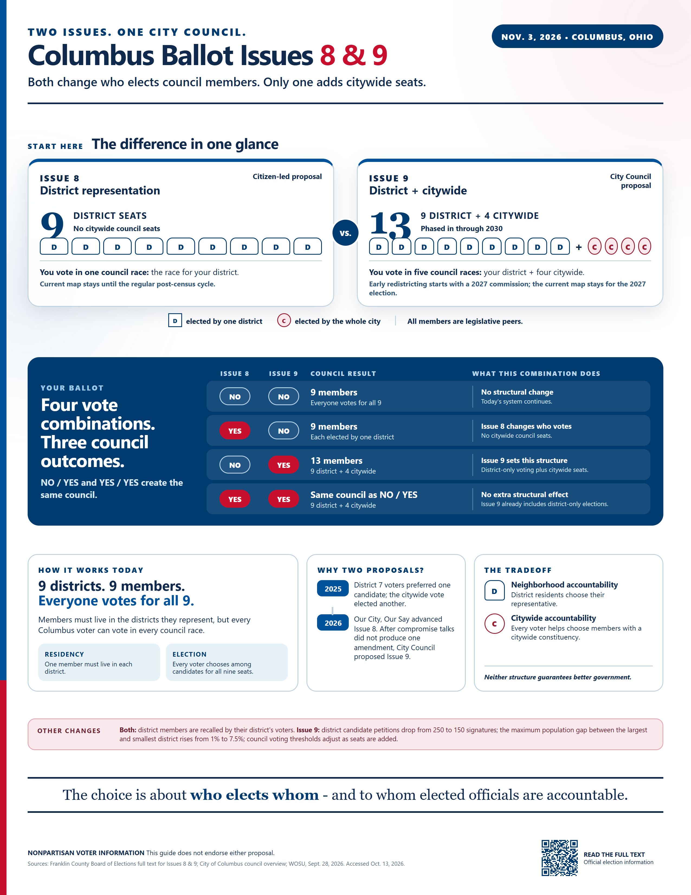

Print-ready PDF
US Letter portrait, prepared for crisp home or professional printing.
- Best for
- Handouts and bulletin boards
- Format
- 8.5 × 11 inch PDF
NONPARTISAN VOTER INFORMATION
Both proposals change who elects City Council members. Only one adds citywide seats. This visual guide shows the difference and explains all four ballot combinations.
This guide does not endorse either proposal.
THE COMPLETE VISUAL GUIDE
Designed for a quick read, with the full ballot mechanics kept in one place.

CHOOSE THE RIGHT FORMAT
US Letter portrait, prepared for crisp home or professional printing.
DIGITAL
A high-resolution image for websites, email, newsletters, and digital displays.
MOBILE
A condensed portrait edition sized for phones and social sharing.
VERIFY THE INFORMATION
The guide was reconciled against the certified amendments and cross-checked with local reporting. The official Franklin County election page hosts the full text of both measures.